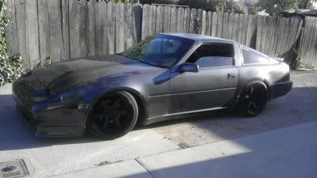

-
So the tuner we were going to use this fall got delayed till next spring and I want to take a step at base tuning the car so I can run it safely at around 13-15 psi. There's a few things I need help on:
1. Knock Detection - I was looking at haltech Knock ears to use while on the dyno. This is a cheap option and honestly I'm not looking to buy some $300 unit that I will only use one time during tuning. I want to be sure I'm able to detect any knock, but understand it will take a trained ear with this to detect. Is anyone familiar with any other options that has an interface that could be programmable with knock lights and doesn't cost a fortune? Also this looks like it comes with Z32/standard bosch sensor. I believe those are utilized with M6 bolts. Does anyone know the fitting end/size of stock sensor? Probably can fit this elsewhere on the block to im sure, but I would feel like stock location would be best.
2. Scaling out load values - This car will be making over 600 rwhp eventually. Should I just bite the bullet and scale out my load values now so I don't have to waste time with another tuner doing it later or is this something I shouldn't touch unless I see I'm hitting those higher load values.
3. T Pulse width - is this something I will need to touch or should I leave at stock values? I'd assume I would only have to adjust max pulse width if necessary at higher RPM levels?
4. Fuel Map - Do you guys suggest editing in raw values or estimated A/F values? It seems like estimated values are slightly aggressive as stock value would estimate 10.63 AFR at full load in high rpm. What is usually your targeted raw value and estimated values to hit a 11:1 AFR.
5. Scalers/Timing Tables - any key things to adjust in these? I figure most of the time will be spent optimizing spool up area on fuel map and fine tuning timing.
6. Timing - here's where I'm scared. I don't have much experience with setting up the timing map. What are some newbie pointers and when on the dyno should I just be focusing on torque curves and adjust timing to peak torque at a smooth curve? What raw values are really conservative at full boost and what's more aggressive with advanced timing?
7. Injector multiplier/latency - Focus on latency with idle and adjust K constant higher lower to hit targeted AFR during load, correct?
8. MAF scaling - I'm running an HPX MAF and used the MAF conversion feature on Nistune for HPX MAF 3 in High load. Have people had success on this scaling or is this just a baseline and adjustments will likely be necessary?
I've laid out a basic street tune, but have never dyno tuned and really the only way to learn this stuff is trial and error. Hopefully I can get some good pointers from some of you guys who have tuned some higher HP cars on here as it would be much appreciated. Nothing better than being able to say you built and tuned the car too. Just want to make sure I get it right though.
Car Details
Vg30 block
Bottom End Tech EPR 9.2 CR pistons
Ported OWO vg33 Heads - ferrea valves, schneider springs/valve retainers
680cc rx7 injectors
280/280 isky cams (adjustable cam gears)
HPX MAF
3" intercooler piping
PT6266 gen 2 turbo Last edited by 300zxturboftw; 09-11-2016, 08:20 PM.Usual Z31 suspect: Garage Queen (aka broken)
Last edited by 300zxturboftw; 09-11-2016, 08:20 PM.Usual Z31 suspect: Garage Queen (aka broken)

-
Did you ever get this thing tuned???? -
A general comment, anyone who thinks that they will get 600rwhp out of a single cam VG needs to understand that such power is on the edge as far as getting the tune absolutely right. There is no cheap and reliable way around this, a good aftermarket ECU that the dyno tuner likes together with all the engine protection bells and whistles is mandatory. Not just for the tune but permanently, eg Lambda sensors are not mentioned in the OP, they are mandatory here no question.Last edited by 260DET; 02-13-2018, 05:06 PM.

Copyright © 2006–. All rights reserved. Privacy Policy